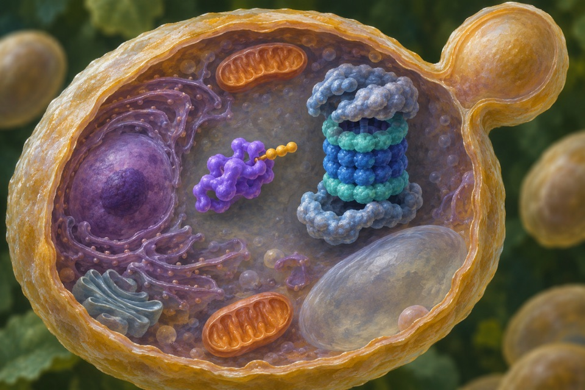

Module 01
Optical estimation of force across vinculin
Estimate molecular-scale loading of vinculin at focal adhesions.
Evidence recordOpen any of the ten modules to see the reported observation, its sources, and the research questions still open.
Estimate molecular-scale loading of vinculin at focal adhesions.
Evidence record
Measure attachment force and pressure relative to surface and sucker geometry.
Evidence record
Measure hydraulic conductivity in comparable root tissues and distinguish it from net water uptake in soil.
Evidence record
Measure cyclic dimer opening and identify the resulting linear oligomer.
Evidence record
Measure conditional reduction and recovery of a target protein after a specified cue.
Evidence recordMeasure water fraction and mechanical response of the hydrated slime network.
Evidence record
Compare citrate permeability and separately measure any root exudation or phosphate mobilization outcome.
Evidence recordMeasure oxidized manganese product and distinguish it from adsorption or abiotic precipitation.
Evidence recordMeasure the change in cAMP production attributable to illumination.
Evidence record
Measure joint extension and pressure or force together.
Evidence record